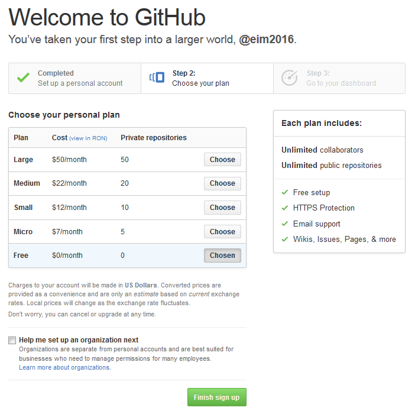
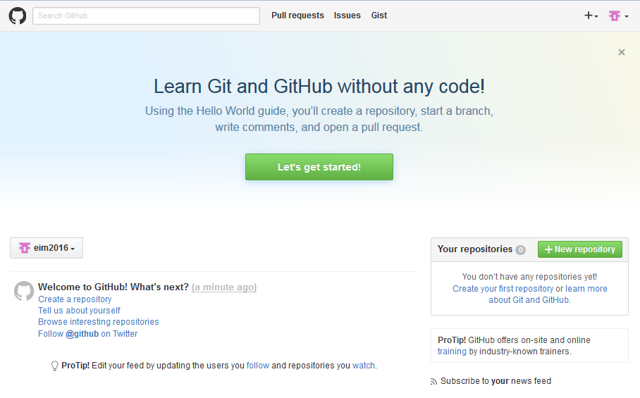
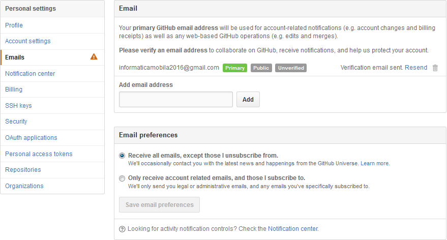
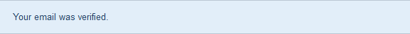
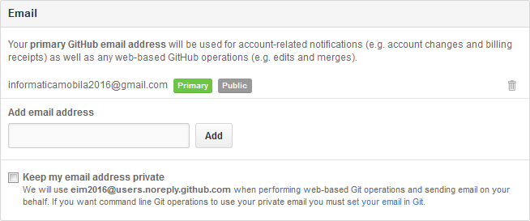
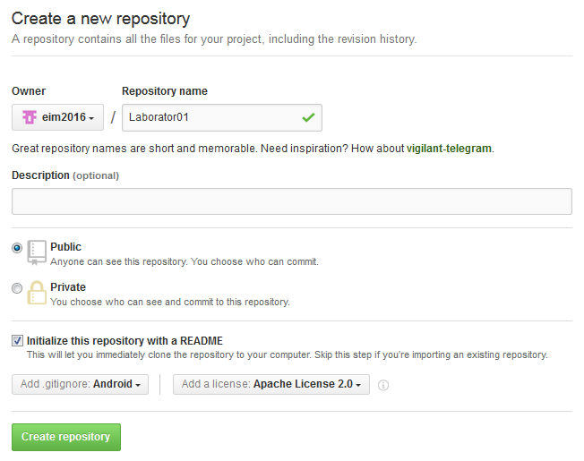
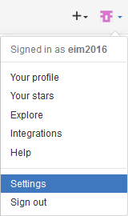
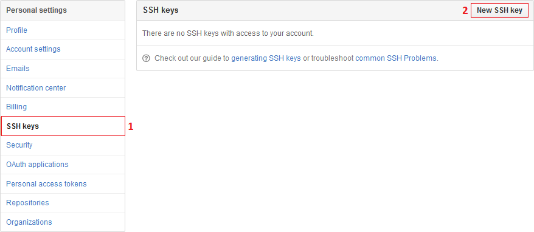
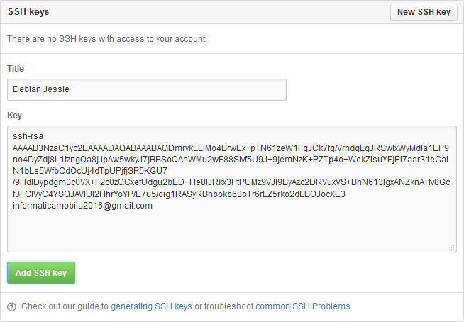
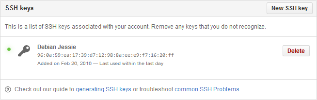

Git
Instalare
Linux
De regulă, instalarea Git se face prin intermediul utilitarelor de gestiune a pachetelor incluse în distribuția Linux:
- sisteme de tip Debian/Ubuntu
student@eim2016:~$ sudo apt-get install git
- sisteme de tip Fedora
student@eim2016:~$ sudo yum install git
Versiunea curentă este 2.1.4.
Windows
Se poate utiliza un client de tipul GitHub for Windows, care este disponibil atât sub forma unei versiuni în linie de comandă (preferabil de utilizat) cât și a unei versiuni care conține o interfață grafică cu utilizatorul.
Versiunea curentă este 3.0.12.
Crearea unui cont Github
1. se accesează GitHub și se apasă butonul Sign up for GitHub completându-se informații precum numele de utilizator, adresa de poștă electronică și parola
 2. se alege planul tarifar implicit, gratuit, care nu oferă posibilitatea de creare de directoare private
2. se alege planul tarifar implicit, gratuit, care nu oferă posibilitatea de creare de directoare private

3. în panoul de administrare pot fi accesate mai multe legături către tutoriale pentru familiarizarea cu mediul GitHub; prin apăsarea butonului New Repository se poate crea o zonă de lucru corespunzătoare unui proiect

4. la adresa de poștă electronică specificată, va fi transmisă legătura către pagina Internet pentru confirmarea validității acesteia (se apasă butonul Confirm).



5. crearea zonei de lucru implică specificarea unei denumiri, a unei descrieri (opțional), a tipului de director (public sau privat - doar contra cost!!!), a modului de inițializare (local, prin git init sau la distanță, prin git clone - ceea ce implică adăugarea unui fișier README), a fișierelor ignorate (corespunzătoare limbajului de programare folosit) și a tipului de licență sub care este publicat codul sursă

Configurare
Procesul de configurare Git presupune specificarea unor informații pentru personalizarea acestuia, precum și generarea / utilizarea unor chei SSH (preexistente) pentru autentificarea în cadrul directorului la distanță fără a fi implicate mecanisme de siguranță precum parolele.
Personalizare
Operațiile de personalizare se realizează prin intermediul utilitarului git config care este livrat împreună cu Git, prin intermediul căruia se stabilesc valorile variabilelor de configurare ce controlează aspecte ce țin de aspectul acestuia precum și de funcționalitatea sa. De regulă, astfel de operații se realizează o singură dată (sunt încărcate în mod automat atunci când sunt realizate actualizări ale sistemului), putând fi reluate însă în caz de necesitate.
Există trei nivele de stocare a variabilelor de configurare, de la general la specific, în funcție de aplicabilitatea acestora:
- pentru toți utilizatorii din cadrul sistemului de operare și pentru toate directoarele (eng. repository) acestora, dacă se folosește opțiunea
--system, acestea fiind reținute în/etc/gitconfig(pe sistemele Windows, acest fișier este relativ directorului în care s-a realizat instalarea) - pentru utilizatorul curent din cadrul sistemului de operare și pentru toate directoarele sale, dacă se folosește opțiunea
--global, acestea fiind reținute în~/.gitconfig(pe sistemele Windows, acest fișier este căutat în directorul%USERPROFILE%) - pentru utilizatorul curent din cadrul sistemului de operare și pentru un anumit director, în
.git/configasociat acestuia.
În mod evident, valorile variabilelor de configurare de la un nivel mai specific le suprascriu pe cele de la un nivel mai general.
Variabilele de configurare cel mai frecvent utilizate sunt:
- legate de identitatea utilizatorului, importante datorită faptului că sunt incluse (în mod automat) în fiecare operație de consemnare
student@eim2016:~$ git config --global user.name "Elemente de Informatica Mobila 2016" student@eim2016:~$ git config --global user.email informaticamobila2016@gmail.com
- legate de editorul de text utilizat în mod implicit atunci când este necesară introducerea unui mesaj
student@eim2016:~$ git config --global core.editor gedit
- legate de utilitarul pentru identificarea diferențelor, utilizat pentru rezolvarea conflictelor
student@eim2016:~$ git config --global merge.tool diff
Valori acceptate sunt:
vimdiff,kdiff3,tkdiff,meld,xxdiff,emerge,gvimdiff,ecmerge,opendiff, dar și alte programe dezvoltate de utilizatori în acest scop. - legate de aspect:
color.status,color.branch,color.interactive,color.diff. - legate de alias-uri (prescurtări) ale unor comenzi
- git
student@eim2016:~$ git config --global alias.comm commit student@eim2016:~$ git config --global alias.ustg 'reset HEAD --' student@eim2016:~$ git config --global alias.last 'log -1 HEAD'
- externe: trebuie precedate de caracterul
!
Valorile variabilelor de configurare pot fi verificate prin comanda:
student@eim2016:~$ git config --list
/etc/gitconfig, ~/.gitconfig respectiv .git/config, situație în care este utilizată ultima valoare întâlnită, prin parcurgerea locațiilor în această ordine.Verificarea valorii utilizate pentru o variabilă de configurare se face prin:
student@eim2016:~$ git config {configuration_variable}
De asemenea, poate fi listat conținutul fișierelor de configurare, individual (folosind comanda cat, de exemplu).
Chei SSH
Cheile SSH reprezintă un mecanism de identificare a mașinilor autorizate, fără a fi necesare parole. Acestea trebuie asociate în mod obligatoriu contului GitHub.
- se verifică dacă pe mașina în cauză există deja chei SSH
student@eim2016:~$ ls -al ~/.ssh
Dacă sunt listate fișiere de tipul
id_rsa.pubsauid_dsa.pub, acesta pot fi folosite, în caz contrar fiind necesară generarea acestora. - generarea unei chei SSH (plasată în
~/.ssh/id_rsaîn mod implicit) se face pe baza unei adrese de poștă electronică, respectiv a unei parole:student@eim2016:~$ ssh-keygen -t rsa -C "informaticamobila2016@gmail.com" Generating public/private rsa key pair. Enter file in which to save the key (/home/student/.ssh/id_rsa): Enter passphrase (empty for no passphrase): Enter same passphrase again: Your identification has been saved in /home/student/.ssh/id_rsa. Your public key has been saved in /home/student/.ssh/id_rsa.pub. The key fingerprint is: 96:0a:59:ea:17:39:d7:12:98:8a:ee:e9:f7:16:20:ff informaticamobila2016@gmail.com
- cheia SSH generată trebuie indicată daemon-ului
ssh-agent:student@eim2016:~$ eval "$(ssh-agent -s)" Agent pid 4435 student@eim2016:~$ ssh-add ~/.ssh/id_rsa Enter passphrase for /home/student/.ssh/id_rsa: Identity added: /home/student/.ssh/id_rsa (/home/student/.ssh/id_rsa)
- se vizualizează cheia SSH generată (
cat ~/.ssh/id_rsa.pub) și se asociază contului GitHub- se accesează tab-ul Settings
 - din meniul afisat, se selectează opțiunea SSH Keys și apoi se apasă butonul New SSH Key
 - se completează câmpurile Title (cu o denumire sugestivă a mașinii de pe care se dorește să se realizeze conexiunea) și Key (valoarea cheii SSH) și apoi se apasă butonul Add SSH key
 - valoarea introdusă va fi afișată în lista de chei SSH asociate contului

- verificarea conectivității se face prin accesarea GitHub prin SSH, o configurare corectă fiind indicată de afișarea numelui de utilizator dorit
student@eim2016:~$ ssh -T git@github.com The authenticity of host 'github.com (192.30.252.129)' can't be established. RSA key fingerprint is 16:27:ac:a5:76:28:2d:36:63:1b:56:4d:eb:df:a6:48. Are you sure you want to continue connecting (yes/no)? yes Warning: Permanently added 'github.com,192.30.252.129' (RSA) to the list of known hosts. Hi eim2016! You've successfully authenticated, but GitHub does not provide shell access.
De asemenea, în lista cheilor SSH asociate contului GitHub, va fi indicată data la care aceasta a fost utilizată cel mai recent.